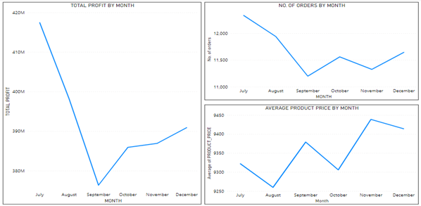
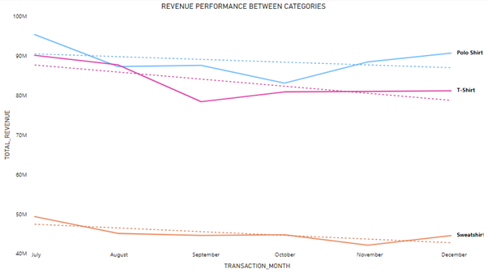
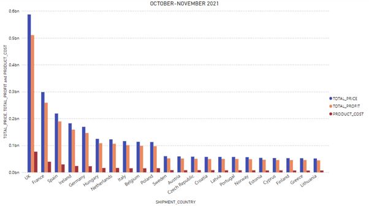
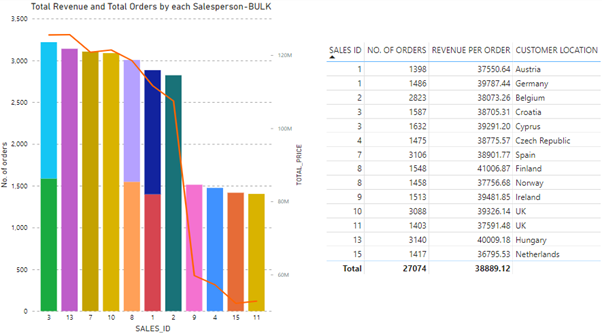
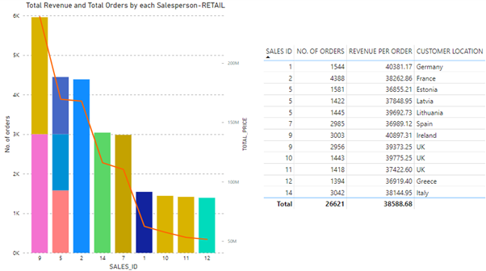
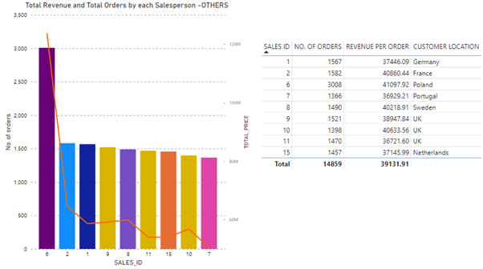
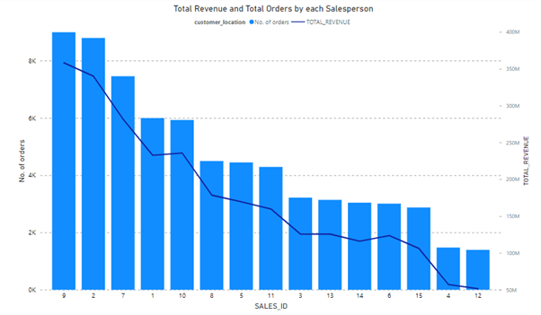

REPORT OF PROJECT SOLVED USING POWER BI
OBJECTIVE: To explore the overall trend and revenue growth or decline,market in each nation, cost in them, potential markets of interest, and also to undestand the performance of each salesperson by customer category of a cloth manufacturing company
INTRODUCTION:
Universal Export is a manufacturing company of garments which supplies plain, unmarked, and unlabeled clothing to wholesalers, retailers, and others in UK. As per the company report, it is estimated to make 1 million GBP in revenue per year. As a business analyst of the company, data available was analyzed to help the management make rational decisions. Overview of performance of the company in the previous year 2021, Extraction, Transformation and Loading of data, analysis on the data and their corresponding visualizations, and suggestions to the management for the rational decisions that could be made are included in this report. BACKGROUND: In 2021, the company faced a series of profit and loss, as can be expected due to the pandemic affecting the balance of businesses. Analysis on the average price of products, number of orders received, and the total profit earned was analyzed on a month-on-month basis. It can be observed from the graph that the total profit (graph on the left) was majorly affected by the changes in prices over the months (graph at the bottom right). The profit was at its lowest in September and the number of orders received (graph on top right) were also low due to the increase in average price of products. After observing the reduction in profit due to reduction in sales, the product prices were decreased in October and then the sales began increasing, which also increased the profits. In November again, the product prices were increased, and the sales went down, but the profit was not largely affected as the decrease in sales was compensated by the high price which resulted in profit gain from each order received. .

TECHNICAL SUMMARY OF ANALYSIS:
Firstly, all the datasets available were extracted which were Transactions.csv, Customers.csv, Logistics.csv, Products.csv and Salespeople.json. The next step was to understand the data and to transform and correct any discrepancies in the data. Missing data was observed in the personal data of customers such as email id and phone number, but these were not altered as those variables are not used in the analysis. Missing data was also observed in price and cost per unit, and these missing data points were removed. Since month-on-month analysis is required to make certain decisions, a duplicate of the TRANSACTION_DATE was made, and the months were extracted, but were kept in the form of numbers rather than words (for example, for the seventh month, instead of ‘July’, the number 7 corresponding to the month was retained), as trend line can only be made if the axis of graph is in date form and numerical. Selecting ‘month’ from the hierarchy of dates gives month names, which does not allow adding trend line. The next change to be made was the customer address from CUSTOMERS.csv. Values in the customer address was of the form ‘Leeds, UK’. This is split into two columns with the city name in ‘customer city’ and country name in ‘customer country’. The variable customer_since_year was in the form of a whole number, and that was changed to date format. Data types of all the other variables are accurate according to the values stored in them. To find an insights on total revenue and profit, a new variable was created which was total_profit. It was the difference between TOTAL_PRICE and PRODUCT_COST. PRODUCT_COST is the amount spent by the company for manufacturing the product, and TOTAL_PRICE is the amount at which the company sells the product inclusive of all the charges, so finding the difference between the two gives the profit earned. After implementing all these changes, the data is loaded into Power BI. All these changes can be traced back by going to ‘Transform data’ in the tool bar of Power BI, then clicking on the required data set and, the changes made can be seen step by step on the right-hand side of the page under the title ‘APPLIED STEPS’.
Relationship between datasets:
It was observed that all the datasets were not linked with each other. Only data for Transactions, Products and Logistics had a relationship. Logistics and Transactions were linked by LOGISTIC_ID, and Transactions and Products were linked by PRODUCT_ID. Products and Logistics do not have a direct relationship as there are no common variables. New relationships were established to connect all the data sets, so that the visualizations can have more meaning and accuracy. Dataset on Customers and Transactions were linked by CUSTOMER_ID, Customers and Salespeople by salespeople_unique_identification and SALES_ID. Now, all the datasets have a connection, some are direct, and some indirect.
ANALYSIS AND FINDINGS:
1.REVENUE PERFORMANCE
To understand the revenue performance of t-shirt, polo shirt and sweatshirt from July 2021 to December 2021, a line graph is plotted. It shows the revenue performance for the three categories in each month. The dotted lines show the overall performance or trend of the product.
It was noted earlier that there was an increase in average price of products in different months. This increase in price resulted in decrease in sales followed by decrease in revenue.
FINDINGS:
• Polo shirt had significant decrease in revenue in August and then another significant loss was observed in October. After October, the sales began increasing in November and December.
• T-shirt had major loss in revenue in September, which followed by a slight improvement in October. After October, the revenue was increasing but it was not very significant.
• Sweatshirt had decrease in revenue in August, which then had slight improvement till October when revenue was comparatively better, but then dropped down again in November, and improved in December.
• Polo shirt and t-shirt are high performing products as compared to sweatshirt, as the revenue of sweatshirt is much lower than the other two categories.
• The overall trend observed for all three categories is that it is decreasing, which means, the revenue is not improving, but going down.
2. NATIONAL PERFORMANCE:
It is important to understand how each of the nations are doing where Universal Export has its products shipped to. To understand the cost, revenue and the profit generated in each nation, a column chart was created with cost, revenue and profit corresponding to each of the 22 nations where the products are shipped, for the months October – November 2021.
This chart was created using the variables from the TRANSACTONS data set. The variables used were TOTAL_PRICE, Total_profit and PRODUCT_COST. The total price is directly proportional to the number of orders sold.
It can be observed from the graph that the red colored block, which represents the product cost is the expense incurred by the company in those nations combined for all the products. The block in the middle (orange) represents the profit, which is proportional to the total price, and total price is the blue colored block on the left side for each country, that is explained as the sum of total price incurred for each order. The price at which the product is sold is not proportional to the cost incurred for that product, and it can be observed that it was in UK that the products were sold at remarkably high prices as compared to other nations. UK is followed by France, Spain and Ireland in terms of profitability. If considering UK and France, the product cost is 25M and 13M respectively, but the profit gained is 170M and 85M respectively, which is a remarkable figure for the gain in profit.
FINDINGS:
UK has the best market in terms of profit. This is mainly because of the difference in value of money. In other countries where the value of money is comparatively less even though the products may be expensive for the local people in other countries, the equivalent price cannot be as high as it is in UK. Other potential markets following UK are France, Spain, Ireland, and Germany.
3. EFFICIENCY IN SALES:
To understand the efficiency of salespeople who are the face of the company in all these nations, analysis is done by using variables from the datasets SALESPEOPLE, TRANSACTIONS and CUSTOMERS. Analysis of the data was done by differentiating the business category of the customers which are: Bulk, Retail and Others.
The aim is to find out the best performing salesperson regarding the revenue and the number of orders generated for each of the nations, differentiated by the three categories of customers.
Analysis was done for each category separately. Two charts were created for each category: column chart and a table. Column chart shows the number of orders and line in the chart shows total revenue generated by each salesperson. It also shows the number of countries managed by each salesperson visualized by different colors. Table shows the corresponding figures generated by the salespeople which are number of orders and total revenue along with the location of customer for which the salesperson is responsible. The table also allows to compare between salespersons in each country.
A. CATEGORY BULK:

In category bulk, salesperson with ID 3 has generated the highest number of orders and revenue. The person is responsible for two countries Croatia and Cyprus as can be seen from the table and the average revenue generated per order is 38705.31 GBP for 1587 orders in Croatia and 39291.20 GBP for 1632 orders in Cyprus in the previous year from July to December. In this category, two people were assigned to the same country, UK, who are with ID 10 and 11, and the best performing from those two salespeople is salesperson 10. All other countries are represented by only one salesperson in this category.
FINDINGS:
Best Salesperson: 3
Countries: Croatia, Cyprus
Average revenue: 38998.255 GBP
No. of orders: 3219
B. CATEGORY RETAIL:

For category retail, salesperson 9 was found to be performing the best, generating highest revenue and orders and is responsible for two countries. In Ireland, salesperson 9 generated an average revenue of 40897.31 GBP per order for 3003 orders and 39373.25 GBP per order for 2956 orders in the UK. For this category, three salespeople were assigned to the UK who were 9, 10, and 11. Out of these three people, the best performing is salesperson 9 generating higher revenue and number of orders as compared to the other two in the UK.
FINDINGS:Best Salesperson: 9
Countries: Ireland, UK
Average revenue: 40,135.28 GBP
No. of orders: 5959
C. CATEGORY OTHERS:

In category others, salesperson 6 was the best performing, and had significant difference in the revenue generated and number of orders sold as compared to the others. All the other salespeople are almost on the same level in terms of the number of orders sold. Salesperson 6 is responsible for Poland and has generated an average revenue of 41097.92 GBP per order and 3008 orders during July-December 2021.
FINDINGS:Best Salesperson: 6
Country: Poland
Average revenue: 41097.92 GBP
No. of orders: 3008
BEST PERFORMING SALESPERSON
To find the best salesperson, he/she should have sold the highest number of products, as head of sales should be an expert in getting maximum orders.

- Salesperson 9 has sold the highest number of products overall as can be observed from the graph below.
- Salesperson 9 also generated the highest revenue as compared to the others.
It would be beneficial for the department if the salesperson was responsible for the country with the highest market, and in this case salesperson 9 itself is responsible for UK, which has the highest market, and that is an added benefit